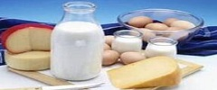
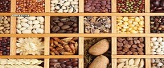
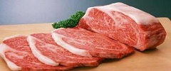
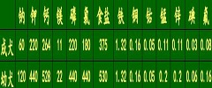
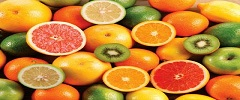

常用饲料
1、动物性饲料
包括家畜、家禽、野生动物的肉及其副产品，鱼类及其他水产动物，乳品，蛋类等。其中肉、脂肪和内脏是犬最可口的饲料。
犬常用动物性饲料包括：肉类饲料 、鱼类饲料、乳品和蛋类饲料、畜禽副产品 等。
2、植物性饲料
植物性饲料包括小麦、大米、玉米、小米、和高粱米等谷物，白菜、马铃薯、萝卜、菠菜和地瓜等蔬菜以及植物油等。
犬常用植物性饲料主要包括：谷物饲料 、蔬菜 、植物油等。
3、添加饲料
添加饲料是指在配合饲料中根据营养价值和各种营养物质的比例要求而增加的各种微量元素、矿物质和维生素等，有时为了提高饲料的适口性，还增加一些调味饲料。
更多内容
商品狗粮
按照狗粮功能与用途划分
维持营养型狗粮、生长发育营养型狗粮、保健型和处方型狗粮
按照营养物质含量划分
核心预混型、浓缩型狗粮、全价配合型狗粮。
按照品牌、产地划分
原装进口狗粮，进口分装狗粮，国内代工狗粮，合资狗粮，国内自主品牌狗粮等。
按照宠物犬生理阶段划分
离乳期狗粮、幼犬期狗粮、成犬期狗粮、妊娠期狗粮、哺乳期狗粮、老年期犬粮等.
更多内容
日常呵护要求
（一）建立稳定的饲喂制度
“六定”，即定时、定量、定温、定质、定地点和定次数。
（二）卫生要求
犬舍的温度调节和空气流通
经常保持犬舍内的卫生
定期给犬舍消毒
保持和改善犬舍周围的环境卫生
（三）勤观察
观食欲 、饮水、粪尿
（四）散放与运动
对犬实行正确的散放和运动，可以培养犬的良好习性
增强犬的体质和各种器官的机能
使犬保持良好的体况，增强抗病能力。
更多内容
宠物犬的营养
犬体内各种营养物质的消化、吸收、运输，废物的排除，体温的调节、脏器及关节的润滑及母犬泌乳等都必须有水参与。
成年犬每千克体重每天应给予80~120毫升清洁饮水；幼犬为140~170毫升饮水。

饲养中蛋白质能否满足犬的需要，主要看蛋白质的质量和可消化性。
一般来说，动物性饲料的营养价值高；而植物性饲料的营养价值较低。

一般成年犬的正常碳水化合物需要量为10克/千克体重，其中应有1克的纤维素；幼犬为15.8克/千克体重，其中应有1.5克的纤维素。
碳水化合物中的糖和淀粉容易消化吸收，而纤维素则难以消化吸收。

食物中的粗脂肪除脂肪外，还有油和类脂化合物。这些脂类成分在犬的消化道中被分解成甘油和脂肪酸，由小肠吸收后，再转化为体脂肪利用。
一般而言，成年犬一昼夜每千克体重约需脂肪1.2克，生长发育的犬为2.2克。

矿物质是构成机能组织细胞、骨髓和牙齿的主要成分，是维持酸碱平衡和渗透压的基础物质，是许多酶、激素和维生素的主要成分。
犬必需的矿物质有钙、磷、铁、铜、钴、钾、钠、氯、碘、锌、镁、锰、硫、硒等。

除维生素C和维生素K外，犬不能在体内合成。其他大多数维生素都必须从饲料中得到。
维生素分为脂溶性维生素和水溶性维生素，脂溶性维生素包括维生素A、D、E、K，水溶性维生素包括B族维生素和维生素C。
顶部